Set to Inactive and Active
The Inactive and Active buttons are used to set the selected Hub Members Status to that of the selected button. These buttons are located on the Hub Members tab.
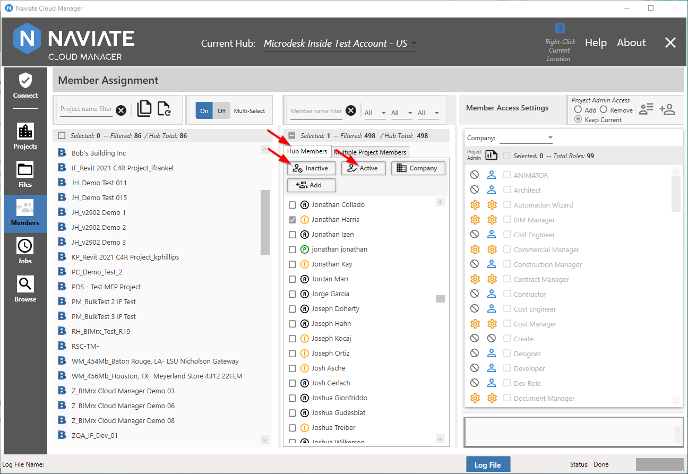
There are several ways to view what the current Status for a Hub member is.
First, observe the status indicators next to each user displayed in the Hub Members browser.
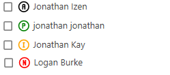
These serve as a quick visual reference to make it easy to identify member status when scanning a large number of members at one time. In addition to the different colors employed for each Status, each Status icon uses the following Letters as identifiers:
|
Indicator |
Color |
Status |
|
A |
Black |
Active |
|
P |
Green |
Pending |
|
I |
Yellow |
Inactive |
|
N |
Red |
Not Invited |
Additionally, placing the cursor on the Status icon also displays the Status description.
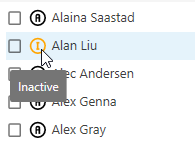
Another way to see this information is via the member popup window.
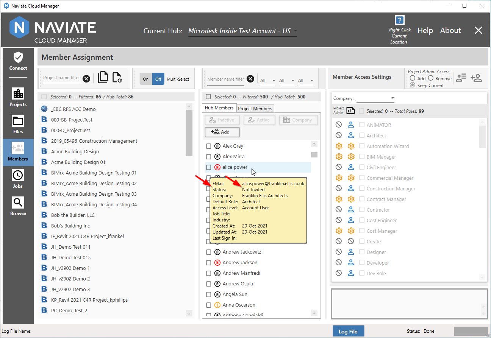
The popup window is handy when viewing some of the less frequently encountered Status Codes, as show above.
Please Note — The member information popup is displayed by placing the cursor directly on or to the right of the member name. The Status description, shown above, is produced by placing the cursor directly on the Status icon.
Finally, another useful way to manage Hub members when performing Status operations is by using the Status Selection Filter.
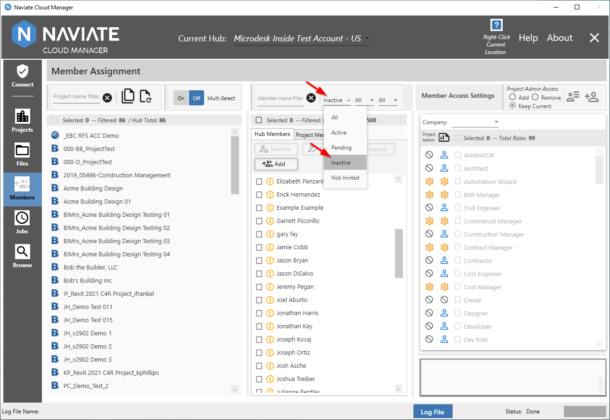
Here we see that only Inactive members have been selected. Of course, the same filtering rules apply here as throughout the application, allowing multiple filters to be combined.
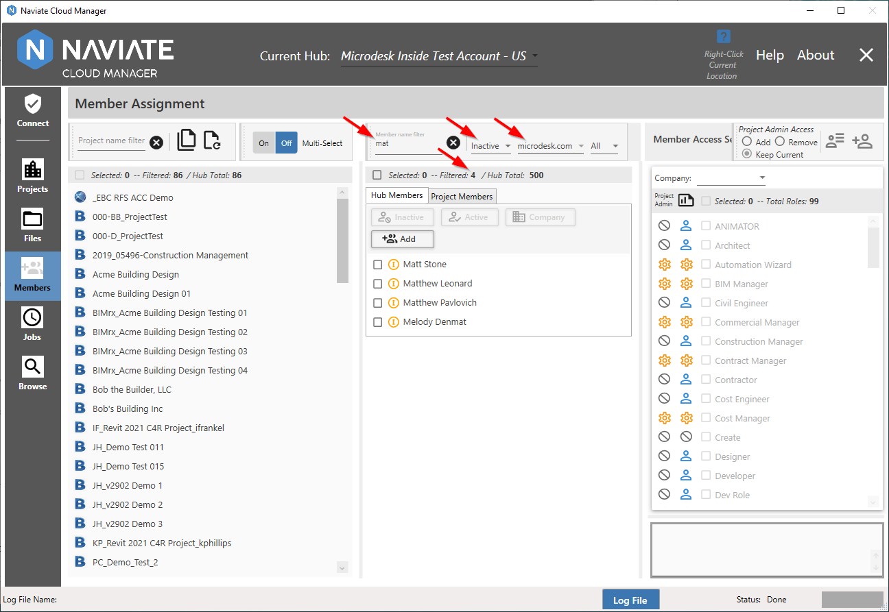
As stated elsewhere, the Member Name Filter is case-insensitive and will retrieve results regardless of where in the Name the specified letters are found.
Once the intended member(s) are selected, we are ready to perform the Status Update operation. Simply press the desired button, indicating that all selected members will be set to either Inactive or Active.
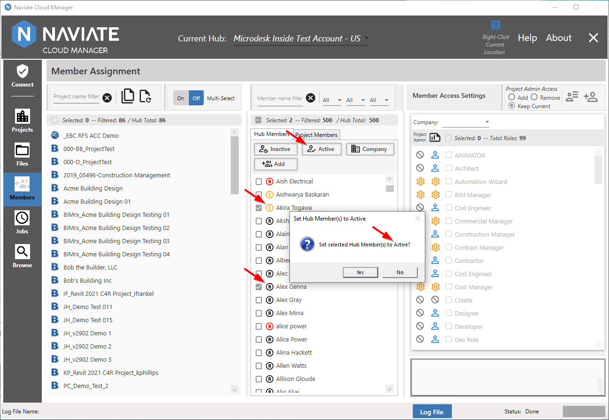
In this case we have selected Active. Notice the confirmation dialog verifies that we have, in fact, pressed the intended button. If not, we can easily cancel the operation by pressing the No button. Also note Naviate Cloud Manager does not prevent us from selecting an already active member or otherwise complain. Pressing Yes begins the process.
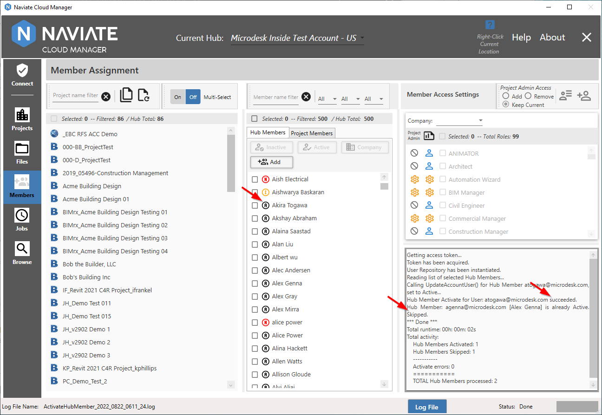
Once processing has completed, the log displays a description of all actions performed or not performed. In this case, we see the one Inactive member selected was set to Active, while the one who was already Active was skipped. Observe how the member display is immediately updated with the new Status.
The process for setting to Inactive is exactly the same, except for the Status selected.
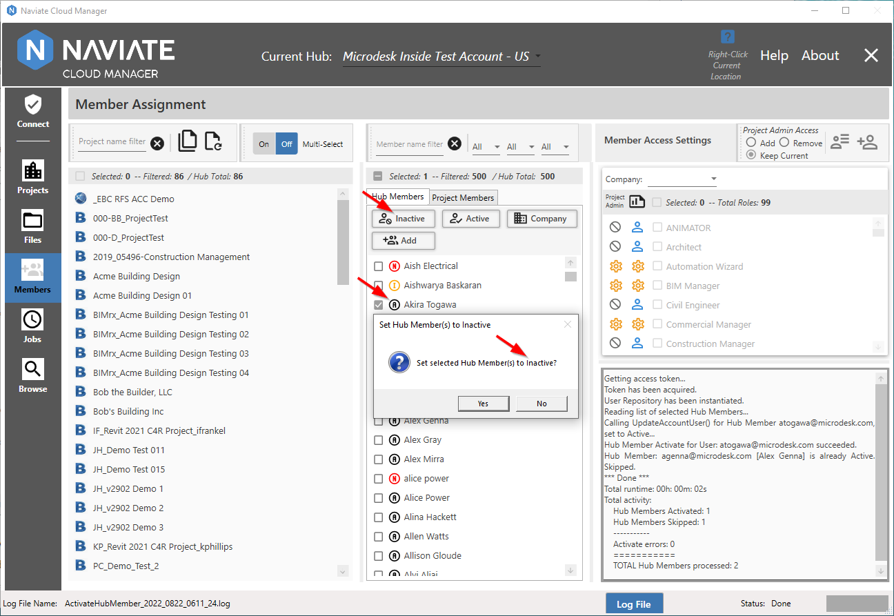
In this case, we have selected only the member for whom we actually want the Status changed.
After confirming that we have, indeed, verified all of our selection criteria and choose to proceed, the following appears.
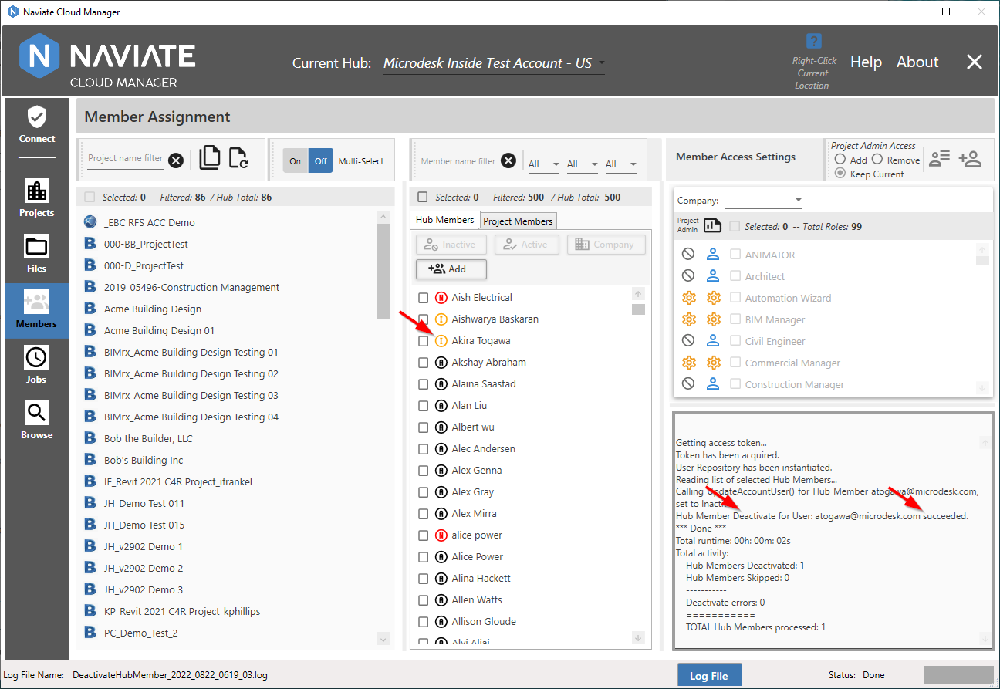
As was the case when setting to Active, the set members to Inactive operation produced a detailed log description and immediately updated the screen display.
As usual, pressing the Log File button, produces the Log File popup.
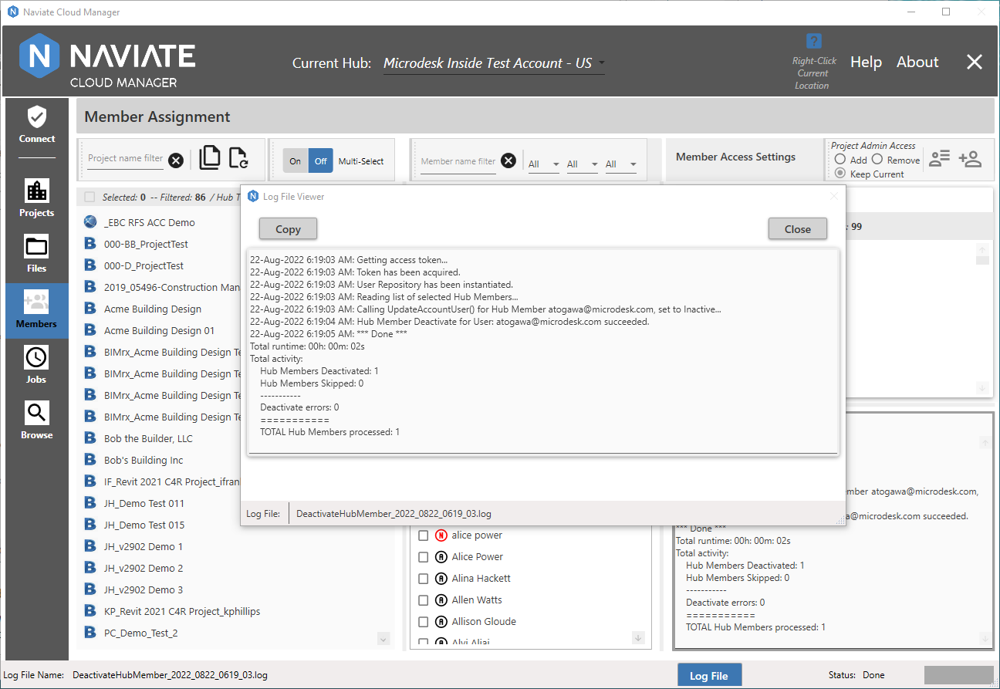
The Log Viewer can be moved and sized as necessary. It contains the identical content as what is displayed on the Members window.
Tip--Use the popup Log Viewer to view the logs as an alternative to viewing them on the main display screen. This can help maintain maximum available screen display space at all times without having to constantly increase/decrease the window display space.